기계가공조립기능사 (2003-07-20 기출문제)
1과목: 기계가공법 및 안전관리
1. 공작기계로 절삭가공을 할 때, 생기는 칩의 형태가 아닌 것은?
- 탄성형 칩
- 유동형 칩
- 열단형 칩
- 균열형 칩
(정답률: 94%)

2. 바이트 끝 반지름이 1.5mm의 바이트로, 0.08mm/rev의 이송에서 선반으로 깎았을 때, 다듬질 표면 거칠기의 이론 값은?(오류 신고가 접수된 문제입니다. 반드시 정답과 해설을 확인하시기 바랍니다.)
- 0.533μm
- 5.333μm
- 53.33μm
- 533.33μm
(정답률: 39%)
3. 절삭공구중 경도가 가장 높고 내마멸성도 크며 절삭 속도가 가장 크고 능률적이나 비철금속의 정밀절삭에만 쓰이는 것은?
- 스텔라이트
- 다이아몬드
- 세라믹
- 초경합금
(정답률: 72%)
4. 밀링 머신 분할대로 원주를 50 등분하려 할때, 분할판의 구멍수15를 이용해서 몇 구멍 간격으로 돌리면 되겠는가?
- 8 구멍
- 12 구멍
- 16 구멍
- 18 구멍
(정답률: 47%)
5. 밀링상향절삭(up cutting)의 설명 중 옳은 것은?
- 커터의 회전 방향과 공작물의 이송 방향이 반대이다.
- 커터의 회전 방향과 공작물의 이송 방향이 직각이다.
- 커터의 회전 방향과 공작물의 이송 방향이 같다.
- 커터의 회전 방향과 공작물의 이송 방향이 45° 이다.
(정답률: 76%)
6. 카운터 싱킹 작업이란?
- 볼트머리 나사의 몸통부분을 묻히게 하기위한 작업
- 접시머리 나사의 몸통부분을 묻히게 하기위한 작업
- 볼트머리 나사의 머리부분을 묻히게 하기위한 작업
- 접시머리 나사의 머리부분을 묻히게 하기위한 작업
(정답률: 76%)
7. 진원도 측정방법이 아닌 것은?
- 지름법
- 반지름법
- 삼점법
- 사점법
(정답률: 62%)
8. 피치원의 직경이 같은 기어에서 모듈 값이 커지면, 이빨수는 어떻게 되는가?
- 많아진다.
- 적어진다.
- 같다.
- 대단히 많아진다.
(정답률: 67%)
9. 드릴 작업시 칩의 제거는 어떤 방법이 가장 안전한가?
- 회전을 중지시키고 솔로 제거한다.
- 회전을 시키면서 손으로 제거한다.
- 회전을 시키면서 솔로 제거한다.
- 회전을 중지시키고 손으로 제거한다.
(정답률: 91%)
10. 선반작업 중 틀린 것은?
- 칩을 제거할 때는 선반을 정지시킨다.
- 주유를 할 때는 선반을 멈춘다.
- 가능한 한 절삭방향을 심압대 쪽으로 한다.
- 치수 측정시엔 선반을 정지시킨다.
(정답률: 88%)
11. 연삭숫돌(grinding wheel)의 3요소는?
- 연삭입자, 지름과 두께, 구멍지름
- 연삭입자, 결합제, 지름과 두께
- 결합제, 숫돌입자, 기공
- 기공, 조직, 결합도
(정답률: 81%)
12. 절삭가공에 속하는 것은?
- 인발가공
- 압연가공
- 연삭가공
- 압출가공
(정답률: 86%)
13. 생산밀링 머신에 관한 설명이 아닌 것은?
- 대량 생산에 적합하도록 어느 정도 단순화 한 것이다.
- 플래노 밀러라고도 한다.
- 스핀들 헤드가 2개이상 있는 다두형도 있다.
- 스핀들 헤드가 1개있는 단두형도 있다.
(정답률: 59%)
14. 연삭 숫돌 표면에 칩과 숫돌가루가 메워져 연삭할 수 없게 되는 현상을 무엇이라고 하는가?
- 글레이징(glazing)
- 로우딩(loading)
- 드레싱(dressing)
- 트루잉(truing)
(정답률: 38%)
15. 바이트의 공구각 중 바이트 날 끝과 공작물과의 마찰을방지 하기 위한 것은?
- 여유각
- 경사각
- 절삭각
- 날끝각
(정답률: 71%)
16. M25 × 2.0의 내경나사 작업을 가공하려 할 때, 내경은 몇 mm로 가공 하는 것이 가장 적합한가?
- ø 22.0
- ø 23.0
- ø 25.0
- ø 27.0
(정답률: 57%)
17. 다음 칩의 생성모양중 열단형 칩에 속하는 것은?
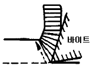
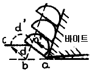
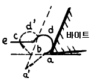
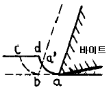
(정답률: 59%)
18. 드릴로 가공한 구멍을 매끄럽고 정밀도가 높은 구멍으로 다듬는 작업은?
- 스크레이퍼 작업
- 줄 작업
- 리머 작업
- 보링 작업
(정답률: 64%)
19. 쇼트 피닝 효과에 관한 사항으로 틀린 것은?
- 부적당한 쇼트 피닝은 연성을 감소시키므로 균열의 원인이 된다.
- 두께가 크고 취성 재료에도 효과가 있다.
- 반복 하중에 대한 피로강도을 갖고 있기 때문에 스프링 기어등 부품에 널리 이용되고 있다.
- 가공물 표면에 잔류 압축 응력이 생기게 되어 표면경도가 커진다.
(정답률: 48%)
20. 수평식 보통형 세이퍼(shaper)의 구성요소가 아닌 것은?
- 테이블(table)
- 램(ram)
- 크로스 레일(cross rail)
- 공구대
(정답률: 41%)
2과목: 기계재료 및 요소
21. 주철이나 강으로 제작하며 원통형 공작물을 올려놓고 중심을 구하거나 원통형 외면에 구멍을 뚫을 때 사용하는 공구는?
- V블록
- 수준기
- 평행대
- 앵글 플레이트
(정답률: 40%)
22. 래핑작업에서 일감의 종류에 속하지 않는 것은?
- 둥근막대 가공법
- 둥근구멍 가공법
- 나사 가공법
- 스플라인 홈 가공법
(정답률: 40%)
23. 선반에서 고속도강 바이트로 연강ø 38㎜를 ø 30㎜로 가공 하였다. 이때 절삭깊이는 몇 ㎜인가?
- 16
- 8
- 4
- 2
(정답률: 46%)
24. 절삭 공구재료의 구비조건 중 틀린 것은?
- 내마멸성이 좋을 것
- 성형성이 좋을 것
- 고온에서 경도가 높고 취성이 클 것
- 피삭재보다 단단하고 인성이 있을 것
(정답률: 77%)
25. 주로 수직 밀링 머신에서 가공하는 작업은?
- 널링
- 비틀림 홈
- 축의 키이 홈
- 총형 홈
(정답률: 51%)
26. 드릴링 머신에 의하여, 주조된 구멍이나 이미 뚫은 구멍을 필요한 크기나 정밀한 치수로 넓히는 작업은?
- 드릴링(Drilling)
- 보링(Boring)
- 태핑(Tapping)
- 엔드밀(End milling)
(정답률: 89%)
27. 선반작업에서 조오가 단독으로 움직여서, 불규칙한 모양의 봉재(棒材)를 고정할 때 정확히 센터를 낼 수 있는 척은?
- 연동척(universal chuck)
- 단동척(independent chuck)
- 공기척(air chuck)
- 콜릿척(collet chuck)
(정답률: 78%)
28. 큰 일감을 고정시키고 주축의 드릴부분을 움직여서 드릴링의 위치를 결정하고 구멍을 뚫는 드릴머신의 종류는?
- 직접드릴머신
- 탁상드릴머신
- 다축드릴머신
- 레디얼드릴머신
(정답률: 56%)
29. 옆에 있는 작업자가 감전이 되었을 때 가장 적당한 응급처치는?
- 병원에 연락한다.
- 물을 부어 몸을 차게 한다.
- 빨리 감전자를 떼어 놓는다.
- 전원을 끊고 응급치료후 병원에 연락한다.
(정답률: 79%)
30. 래크를 절삭공구로 하고 피니언을 기어 소재로 하여 래크 공구에 이상적으로 물리는 인벌류트 치형이 형성되는 운동은?
- 형판에 의한 절삭운동
- 창성에 의한 절삭운동
- 총형 커터에 의한 절삭운동
- 밀링 커터에 의한 절삭운동
(정답률: 60%)
31. 3차원 측정기에 대한 설명으로 틀린 것은?
- 복잡한 형상의 기계부품을 정확히 측정할 수 있다.
- 여러가지 측정 항목을 동시에 측정 가능하도록 통합된 측정기이다.
- CNC 3차원 측정기는 검사공정의 자동화를 이루었다.
- 3차원 측정기는 설치환경에 영향을 받지 않는다.
(정답률: 75%)
32. 지름이 0.⑤ ∼ 0.25mm의 가는황동선등을 전극으로 사용하고 장력을 주어 감으면서 요구하는 윤곽을 따라 가공하는 것은?
- 초음파가공
- 와이어컷 방전가공
- 전해연마
- 플라즈마가공
(정답률: 65%)
33. 그림에서 D=50mm, d=30mm, ℓ=200mm, L=400mm일 때 심압대의 편위량은 얼마인가?
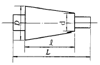
- 10mm
- 20mm
- 30mm
- 40mm
(정답률: 60%)
34. 보통 선반의 주요 부분에서 일감의 길이에 따라 임의의 위치에 고정할 수 있으며 센터 작업을 할 때 센터를 끼워 일감을 지지하거나 드릴을 끼워 가공할 수 있는 부분은?
- 베드
- 바이스
- 왕복대
- 심압대
(정답률: 68%)
35. 기어 시험기에서 측정할 수 있는 것으로 볼 수 없는 것은?
- 피치
- 모듈
- 압력각
- 치형의 정확도
(정답률: 33%)
36. 탄소강의 기계적 성질 중 옳지 않은 것은?
- 탄소강의 기계적 성질에 가장 큰 영향을 주는 원소는 탄소이다.
- 탄소량이 많을 수록 인성과 충격값은 증가한다.
- 표준상태에서는 탄소가 많을 수록 강도, 경도가 증가한다.
- 탄소가 많을 수록 가공변형은 어렵게 된다.
(정답률: 56%)
37. 다음 금속 중 용융점이 가장 높은 것은?
- 백금
- 철
- 텅스텐
- 수은
(정답률: 68%)
38. 다음 주철에서 마그네슘, 세륨, 칼슘실리사이드 등을 첨가시켜 만든 것은?
- 합금주철
- 구상흑연주철
- 칠드주철
- 가단주철
(정답률: 43%)
39. 다음 중 경금속이라 볼 수 없는 것은?
- 알루미늄
- 마그네슘
- 베릴륨
- 주석
(정답률: 51%)
40. 순간적으로 짧은 시간에 작용하는 하중으로 보통하중의 2배가 되는 것은?
- 정하중
- 교번하중
- 충격하중
- 분포하중
(정답률: 75%)
3과목: 기계제도(절삭부분)
41. 무거운 기계와 전동기 등을 달아 올릴 때 로프, 체인 또는 훅 등을 거는데 적합한 볼트는?
- 스테이 볼트
- 전단 볼트
- 아이 볼트
- T 볼트
(정답률: 56%)
42. 벨트전동 장치에서 풀리의 회전력이 되는 것은?
- 초기장력
- 인장쪽 장력
- 이완쪽 장력
- 유효장력
(정답률: 46%)
43. 다음 중 분할 핀에 관한 설명으로 틀린 것은?
- 핀 전체가 두 갈래로 되어 있다.
- 너트의 풀림 방지에 사용된다.
- 핀이 빠져 나오지 않게 하는데 사용된다.
- 테이퍼 핀의 일종이다.
(정답률: 65%)
44. 강을 열처리하지 않고 강의 표면을 다른 금속으로 피복함으로써 표면의 강도를 높이고 표면의 광택을 증가시키며, 내식성을 부여하는 표면처리법은?
- 전해연마
- 화학연마
- 도금
- 질화
(정답률: 58%)
45. 단면적이 20mm2인 어떤 봉에 100kgf의 인장하중이 작용할때 발생하는 응력은?
- 5㎏f/mm2
- 20㎏f/mm2
- 50㎏f/mm2
- 2㎏f/mm2
(정답률: 71%)
46. 나사의 끝을 이용하여 축에 바퀴를 고정시키거나 위치를 조정할 때 쓰이는 세트 스크루우(set screw)의 종류에 속하지 않는 것은?
- 일자홈 정지나사
- 사각 정지나사
- 나비형 정지나사
- 6각구멍 달림 정지나사
(정답률: 45%)
47. 다음 중 캠의 종류가 아닌 것은?
- 판 캠
- 직동 캠
- 원통 캠
- 구름 캠
(정답률: 66%)
48. 황동은 어떤 원소의 2원 합금인가?
- 구리와 주석
- 구리와 망간
- 구리와 납
- 구리와 아연
(정답률: 70%)
49. 인벌류트기어의 언더컷(undercut)발생 원인이 아닌 것은?
- 잇수가 적을때
- 압력각이 클 경우
- 유효 이 높이가 클 경우
- 잇수비가 클 경우
(정답률: 29%)
50. 다음 중 잘못된 것은?
- 인장 · 압축 선형스프링에서 탄성한도 내에서는 스프링의 변형은 하중에 비례한다.
- 스프링지수는 코일의 평균 반지름(R)과 재료의 지름(d)의 비이다.
- 스프링에 하중이 작용하지 않고 있을 때의 높이를 자유 높이라고 한다.
- 코일 스프링에서 유효 감김 수란 스프링의 기능을 가진 부분의 감김 수를 말한다.
(정답률: 39%)
51. 물체의 일부분의 생략 또는 단면의 경계를 나타내는 선으로 자를 쓰지 않고 자유로이 긋는 선의 명칭은?
- 파단선
- 지시선
- 가상선
- 절단선
(정답률: 62%)
52. 다음 중 현의 길이를 표시하는 치수선은?
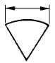
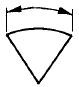
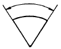
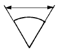
(정답률: 60%)
53. 다음 끼워맞춤 치수공차 기호 중 헐거운 끼워맞춤은?
- φ50 H7 / k6
- φ50 H7 / e7
- φ50 H7 / t6
- φ50 H8 / p7
(정답률: 48%)
54. 보기의 평면도 공차의 두께 해석으로 올바른 것은?
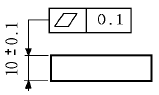
- 10.1 일 때 0.1 까지 허용
- 10.1 일 때 0.2 까지 허용
- 두께 불문하고 0.2 까지 허용
- 두께 10.1 일때는 공차치수를 허용하지 않음
(정답률: 59%)
55. 도면에서 구멍 가공방법을 "B"로 지정한 KS 약호기호는?
- 보링머신 가공
- 부로우칭 가공
- 리머 가공
- 블라스트 가공
(정답률: 86%)
56. 다음 중 단식 드러스트 보울 베어링의 약도는?
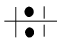
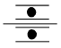
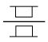
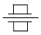
(정답률: 47%)
57. 다음 보기와 같은 부품란의 설명 중 틀린 것은?
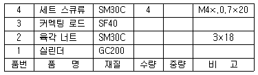
- 실린더의 재질은 회주철이다.
- 육각 너트는 기계구조용 탄소강이며 최대 인장강도가30 kgf/cm2 이다.
- 커넥팅로드는 단조품이며 최저 인장강도가 40kgf/mm2이다.
- 세트 스큐류는 호칭지름이 4mm 이고, 피치 0.7mm 인미터 나사이다.
(정답률: 42%)
58. 상하 대칭인 보기 입체도를 화살표 방향이 정면일 때, 좌측면도로 가장 적합한 것은?
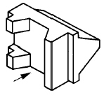
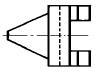
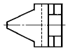
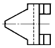
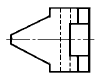
(정답률: 39%)
59. 보기 입체도의 정면도로 가장 적합한 것은?
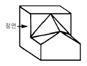
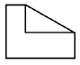
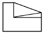
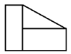
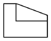
(정답률: 77%)
60. 단면도의 표시방법에서 그림과 같은 단면도의 명칭은?
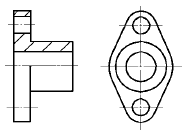
- 전단면도
- 한쪽 단면도
- 부분 단면도
- 회전 도시 단면도
(정답률: 51%)